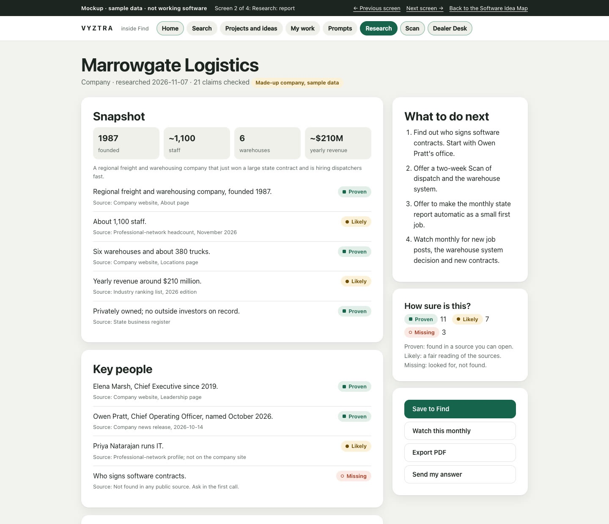
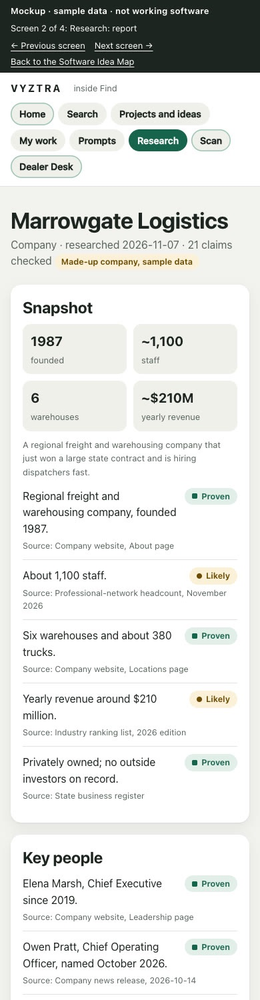
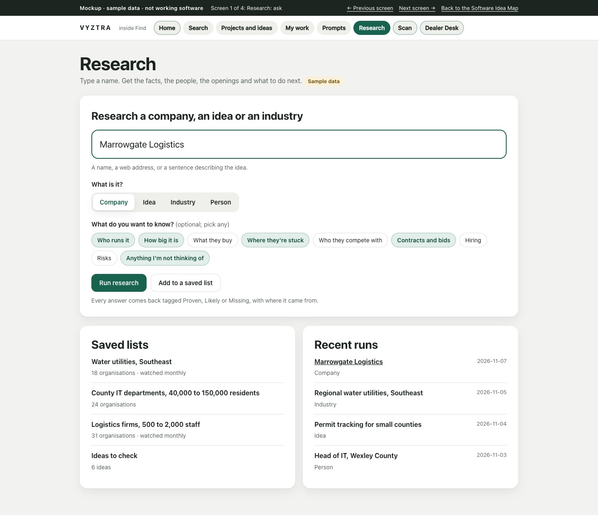
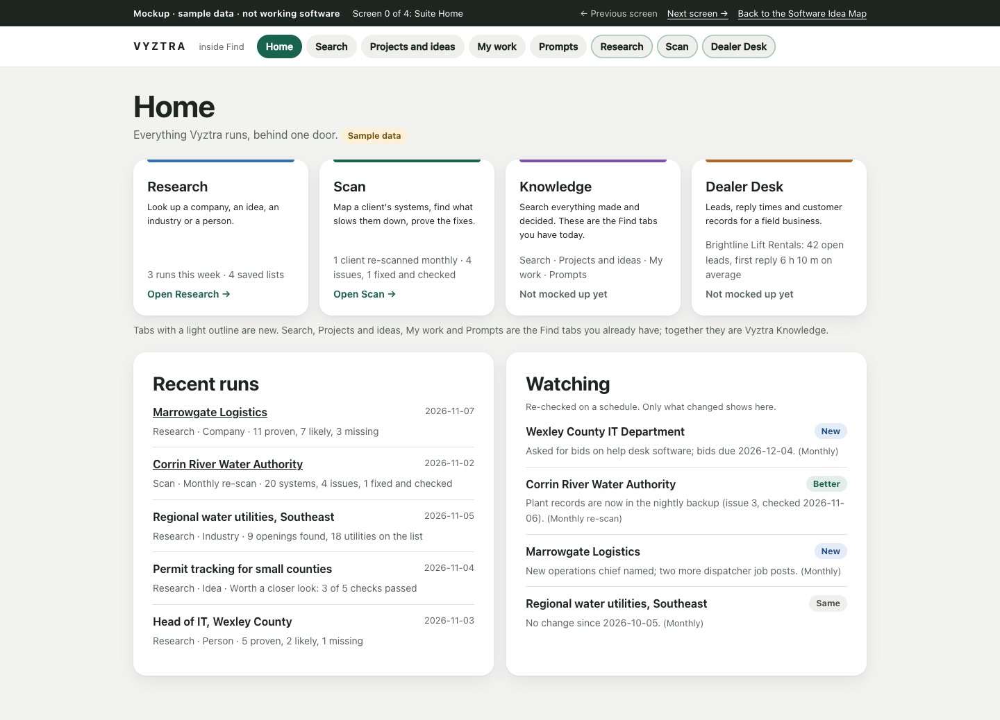

AI research sounds equally sure whether it's right or wrong. I designed a tool for vetting a company, an idea or an industry where every claim carries a label, the strongest label has to be earned twice, and a feature that failed its own test got cut.

Before I pitch a company, I need to know who runs it, how big it is, where it's stuck and what it might buy. An AI can gather that in minutes. It also writes a guess in the same sure voice as a fact, and a wrong fact in a first meeting costs more than the research saved.
Nothing in a normal AI answer tells you which lines came from a source you can open and which were a fair guess.
A paywalled or blocked page is not the same as a fact that isn't out there. Counting one as the other quietly lowers the score of a good lead.
Without the trail, the only choice is to trust the whole report or redo it by hand.
"...building a market research tool like the previous idea i had where I can research a company, idea, industry, etc -> and it gives me info on the company, data that's usable, market opportunities, and anything else i am not thinking of that you could suggest for researching a potential client and/or idea for business projects"My brief to the AI agents, Nov 9, 2026
A method I ran by hand first. Then a tool.
AI agents did the gathering and the second reading. I wrote the rules for what counts as proof, designed the tests, and decided what stayed in.
Every claim tagged FACT, ESTIMATE or UNVERIFIED, with its source next to it.
Drop, Test or Can't tell, added at my request: "add the idea check to the research method". Then I asked for the hard test: "yes to back-testing it against my old ideas".
Back-tested against my old ideas, it failed twice: a bad idea came back marked Test. Ideas now get evidence and no verdict.
The labels were reworded in plain English as Proven, Likely and Missing, and Proven became something the tool has to enforce, not just print.
A verdict feels like the useful part. So before trusting it, I ran it against my own old ideas, where I already knew how things turned out.
It got it wrong twice: a bad idea came back marked Test. A tool that gets a known case wrong will get unknown cases wrong with the same confidence, so the verdict was removed rather than tuned. The tool now shows the evidence and leaves the call to a person.
Back-test failures
Verdicts left in the tool
The most useful thing a research tool can say is "I couldn't confirm this."
A claim is Proven only if its link opens and a second, separate read confirms the page says it. Otherwise it drops to Likely, with a red note saying why.
Paywalled and blocked sources are listed apart and never counted as Missing.
Every report carries a How this was checked section, so the trail travels with the findings.
A Useful / Not useful button on each report, so I can see which reports earned their keep.
The engine is four steps, Gather, Check, Report, Watch, shared with a planned second tool that maps a client's systems.



Later stages, mockupClaims labelled across two real runs: 24 in the first, 32 in the second.
Claims the second read refused to confirm in run 1, so they dropped from Proven to Likely.
Confirmed by the second read in run 2, after 11 of 13 links opened.
Layout checks on the mockups at 1440 and 390 px. 0 failed.
Run 1 came back 7 Proven, 14 Likely and 3 Missing. Run 2 came back 11 Proven, 19 Likely and 2 Missing. The real runs aren't shown here because they name a real organisation; the screens use a made-up company. The tool came out of a map of 80 software ideas; I said yes to starting with Research and its sister tool, Scan.